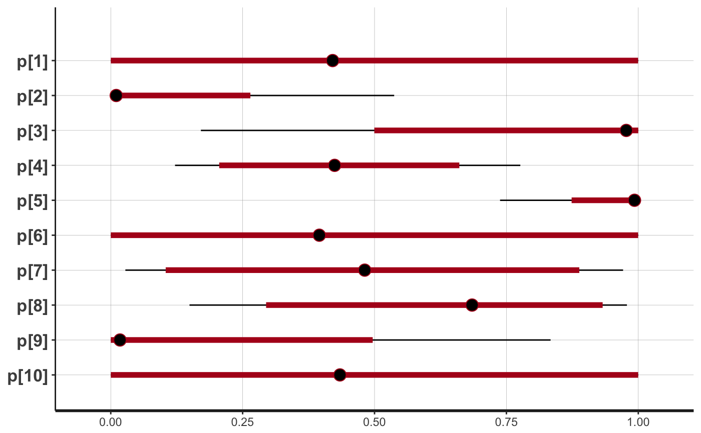

model_ThallHierarchicalBinary.RdThis is the Stan implementation of Thall et al.'s hierarchical model for analysing the response rate of a common drug in multiple sub-types of a single disease.
The model is compiled when trialr is installed and is available at
run-time under stanmodels$ThallHierarchicalBinary.
The design was first published by Thall et al. in 2003.
See the Hierarchical Bayesian Response vignette for a detailed description of
the probability model and a demonstration of the implementation in trial.
Thall, Wathen, Bekele, Champlin, Baker, & Benjamin. 2003. "Hierarchical Bayesian approaches to phase II trials in diseases with multiple subtypes". Statistics in Medicine, 22(5), 763-780. https://doi.org/10.1002/sim.1399
# Hierarchical model for responses in a disease with multiple subtypes dat <- thallhierarchicalbinary_parameters_demo() samp <- rstan::sampling(stanmodels$ThallHierarchicalBinary, data = dat)#>#> #> SAMPLING FOR MODEL 'ThallHierarchicalBinary' NOW (CHAIN 1). #> #> Gradient evaluation took 6.6e-05 seconds #> 1000 transitions using 10 leapfrog steps per transition would take 0.66 seconds. #> Adjust your expectations accordingly! #> #> #> Iteration: 1 / 2000 [ 0%] (Warmup) #> Iteration: 200 / 2000 [ 10%] (Warmup) #> Iteration: 400 / 2000 [ 20%] (Warmup) #> Iteration: 600 / 2000 [ 30%] (Warmup) #> Iteration: 800 / 2000 [ 40%] (Warmup) #> Iteration: 1000 / 2000 [ 50%] (Warmup) #> Iteration: 1001 / 2000 [ 50%] (Sampling) #> Iteration: 1200 / 2000 [ 60%] (Sampling) #> Iteration: 1400 / 2000 [ 70%] (Sampling) #> Iteration: 1600 / 2000 [ 80%] (Sampling) #> Iteration: 1800 / 2000 [ 90%] (Sampling) #> Iteration: 2000 / 2000 [100%] (Sampling) #> #> Elapsed Time: 1.27911 seconds (Warm-up) #> 0.536137 seconds (Sampling) #> 1.81524 seconds (Total) #> #> #> SAMPLING FOR MODEL 'ThallHierarchicalBinary' NOW (CHAIN 2). #> #> Gradient evaluation took 3.3e-05 seconds #> 1000 transitions using 10 leapfrog steps per transition would take 0.33 seconds. #> Adjust your expectations accordingly! #> #> #> Iteration: 1 / 2000 [ 0%] (Warmup) #> Iteration: 200 / 2000 [ 10%] (Warmup) #> Iteration: 400 / 2000 [ 20%] (Warmup) #> Iteration: 600 / 2000 [ 30%] (Warmup) #> Iteration: 800 / 2000 [ 40%] (Warmup) #> Iteration: 1000 / 2000 [ 50%] (Warmup) #> Iteration: 1001 / 2000 [ 50%] (Sampling) #> Iteration: 1200 / 2000 [ 60%] (Sampling) #> Iteration: 1400 / 2000 [ 70%] (Sampling) #> Iteration: 1600 / 2000 [ 80%] (Sampling) #> Iteration: 1800 / 2000 [ 90%] (Sampling) #> Iteration: 2000 / 2000 [100%] (Sampling) #> #> Elapsed Time: 0.923654 seconds (Warm-up) #> 0.506024 seconds (Sampling) #> 1.42968 seconds (Total) #> #> #> SAMPLING FOR MODEL 'ThallHierarchicalBinary' NOW (CHAIN 3). #> #> Gradient evaluation took 3.4e-05 seconds #> 1000 transitions using 10 leapfrog steps per transition would take 0.34 seconds. #> Adjust your expectations accordingly! #> #> #> Iteration: 1 / 2000 [ 0%] (Warmup) #> Iteration: 200 / 2000 [ 10%] (Warmup) #> Iteration: 400 / 2000 [ 20%] (Warmup) #> Iteration: 600 / 2000 [ 30%] (Warmup) #> Iteration: 800 / 2000 [ 40%] (Warmup) #> Iteration: 1000 / 2000 [ 50%] (Warmup) #> Iteration: 1001 / 2000 [ 50%] (Sampling) #> Iteration: 1200 / 2000 [ 60%] (Sampling) #> Iteration: 1400 / 2000 [ 70%] (Sampling) #> Iteration: 1600 / 2000 [ 80%] (Sampling) #> Iteration: 1800 / 2000 [ 90%] (Sampling) #> Iteration: 2000 / 2000 [100%] (Sampling) #> #> Elapsed Time: 1.05917 seconds (Warm-up) #> 0.691487 seconds (Sampling) #> 1.75066 seconds (Total) #> #> #> SAMPLING FOR MODEL 'ThallHierarchicalBinary' NOW (CHAIN 4). #> #> Gradient evaluation took 3.6e-05 seconds #> 1000 transitions using 10 leapfrog steps per transition would take 0.36 seconds. #> Adjust your expectations accordingly! #> #> #> Iteration: 1 / 2000 [ 0%] (Warmup) #> Iteration: 200 / 2000 [ 10%] (Warmup) #> Iteration: 400 / 2000 [ 20%] (Warmup) #> Iteration: 600 / 2000 [ 30%] (Warmup) #> Iteration: 800 / 2000 [ 40%] (Warmup) #> Iteration: 1000 / 2000 [ 50%] (Warmup) #> Iteration: 1001 / 2000 [ 50%] (Sampling) #> Iteration: 1200 / 2000 [ 60%] (Sampling) #> Iteration: 1400 / 2000 [ 70%] (Sampling) #> Iteration: 1600 / 2000 [ 80%] (Sampling) #> Iteration: 1800 / 2000 [ 90%] (Sampling) #> Iteration: 2000 / 2000 [100%] (Sampling) #> #> Elapsed Time: 1.06238 seconds (Warm-up) #> 0.74632 seconds (Sampling) #> 1.8087 seconds (Total) #>rstan::plot(samp, pars = 'p') # Plot the modelled response rates in the subtypes#>#>